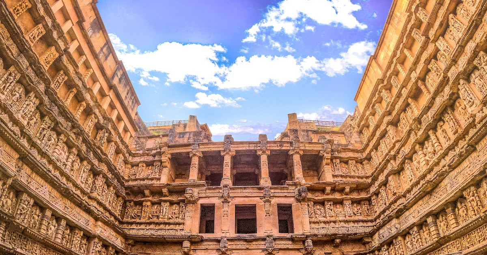

The only real sign of Patan's former glory is this astoundingly beautiful step-well. Located on the banks of the Saraswati River, this is one of the oldest and finest stepwells in Gujarat and is remarkably preserved. Steps lead down through multiple levels with lines of carved pillars and more than 800 sculptures, mostly on Vishnu-avatar themes, as well as striking geometric patterns. The stepwell is made in the form of an inverted temple. It showcases superior craftsmanship of the era, and the unique Maru-Gurjara architectural style and houses sculptures similar to the Vimalavasahi temple in Mount Abu and Sun temple at Modhera.
The stepwell was built in 1063 by Rani Udayamati of the Chaulukya Dynasty to commemorate her husband, Bhimdev I. A 1304 composition of Jain monk, Merutunga, mentions that Udayamati, the daughter of Naravaraha Khangara, built this stepwell at Patan. The same composition also mentions that the stepwell was commissioned in 1063 and was completed after 20 years. Archeologists Henry Cousens and James Burgess visited it in 1890s when it was completely buried under silt and only the shaft and few pillars were visible. The stepwell was rediscovered in 1940s, and the Archeological Survey of India restored it in 1980s. The stepwell has been listed as one of UNESCO's World Heritage Sites since 2014.
Rani-ki-Vav is an exceptional example of a distinctive form of subterranean water architecture of the Indian subcontinent, the stepwell, which is located on the banks of the Saraswati River in Patan. Initially built as a memorial in the 11th century CE, the stepwell was constructed as a religious as well as functional structure and designed as an inverted temple highlighting the sanctity of water. Rani-ki-Vav is a single-component, water management system divided into seven levels of stairs and sculptural panels of high artistic and aesthetic quality. It is oriented in an east-west direction and combines all of the principle components of a stepwell, including a stepped corridor beginning at ground level, a series of four pavilions with an increasing amount of storeys towards the west, the tank, and the well in tunnel shaft form. More than five hundred principle sculptures and over a thousand minor ones combine religious, mythological and secular imagery, often referencing literary works.
Rani-ki-Vav impresses not only with its architectural structure and technological achievements in water sourcing and structural stability, but also in particular with its sculptural decoration, of true artistic mastery. The figurative motifs and sculptures, and the proportion of filled and empty spaces, provide the stepwell’s interior with its unique aesthetic character. The setting enhances these attributes in the way in which the well descends suddenly from a plain plateau, which strengthens the perception of this space.
Rani-ki-Vav is preserved with all its key architectural components and, despite missing pavilion storeys, its original form and design can still be easily recognized. A majority of sculptures and decorative panels remain in-situ and some of these in an exceptional state of conservation. Rani-ki-Vav is a very complete example of the stepwell tradition, even though after geotectonic changes in the 13th century it does no longer function as a water well as a result of the change to the Saraswati River bed. It was however the silting of the flood caused during this historic event, which allowed for the exceptional preservation of Rani-ki-Vav for over seven centuries.
All components including the immediate surrounding soils which adjoin the vertical architecture of the stepwell are included in the property. In terms of intactness, the property does not seem to have experienced major losses since its flooding and silting in the 13th century. However, Patan like many Indian urban centres is experiencing rapid urban growth and the western expansion of the city towards Rani-ki-Vav has to be carefully controlled to protect the integrity of the property in the future.
Rani-ki-Vav has a high level of authenticity in material, substance, design, workmanship and, to a certain extent, atmosphere, location and setting. While it maintained its authentic material and substance, it also required some punctual reconstructions for structural stability. In all instances reconstructed elements were only added where structurally required to protect remaining sculpture, and they are indicated by smooth surfaces and a lack of decoration which can be easily distinguished from the historic elements. Around the outer terrace at ground level, slopes of smooth descent, a so-called sacrificial terrace, were created to prevent soil erosion following stronger rain falls. Unfortunately the Rani-ki-Vav cannot retain authenticity in use and function as a result of the altered ground water levels following the relocation of Saraswati River.
Intercity buses from Ahmedabad to Patan take 3.5 hours, and 1 hour from Mehsana. Shared jeeps are slightly quicker, but less comfortable.
Patan has its own railway station. Nearby railway station is Mehsana, which is 1 hour away from Patan by bus.
The nearest airport from Patan is Ahmedabad, situated at a distance of 125 km. The airport here, in turn is connected to International and Indian cities. Patan has a railway station for easy access.